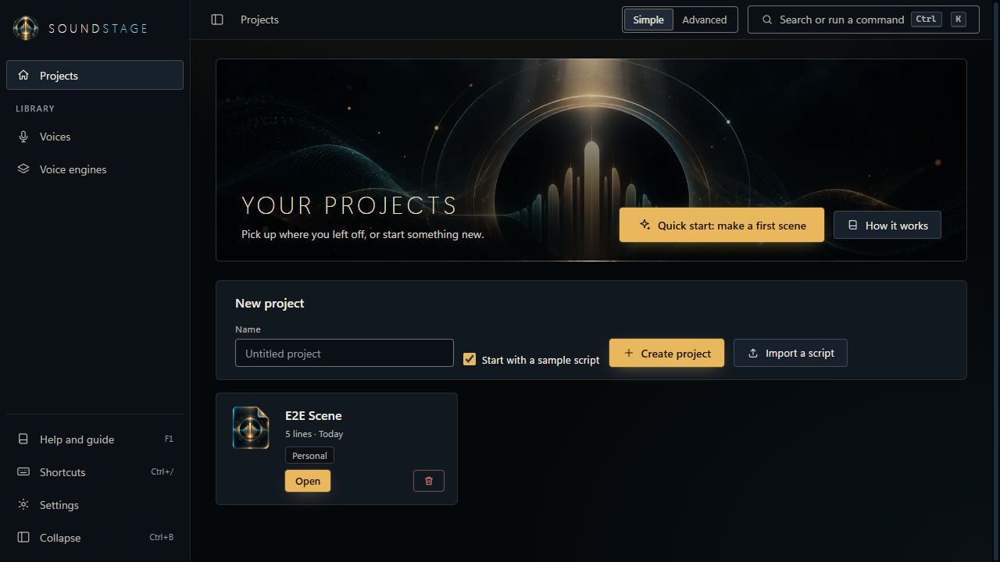
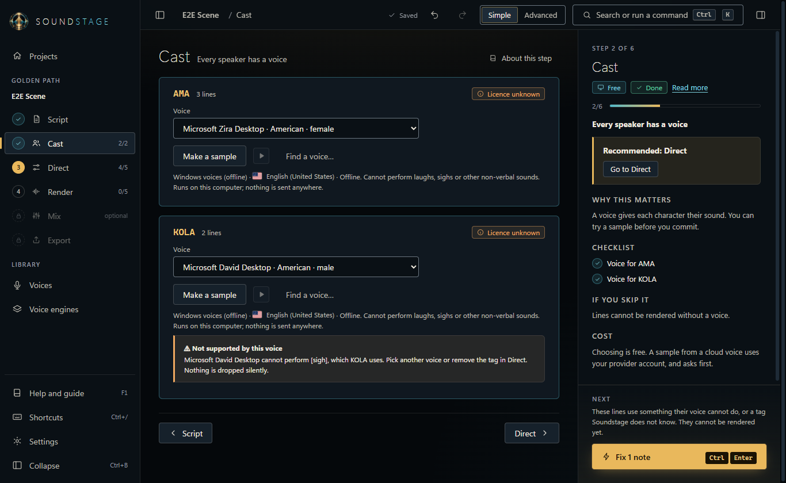
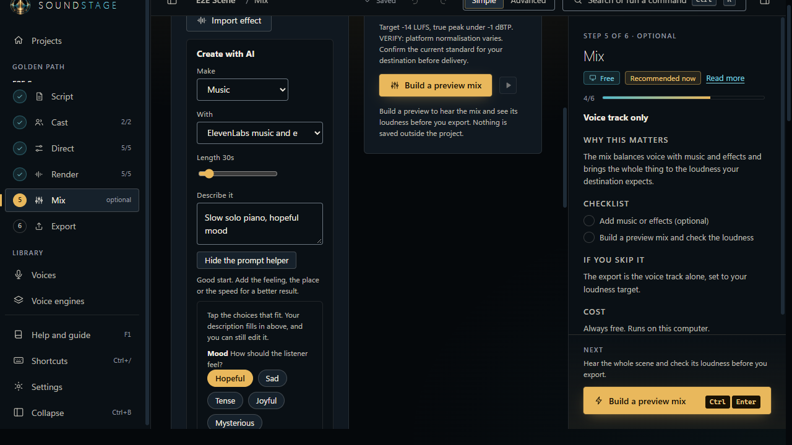
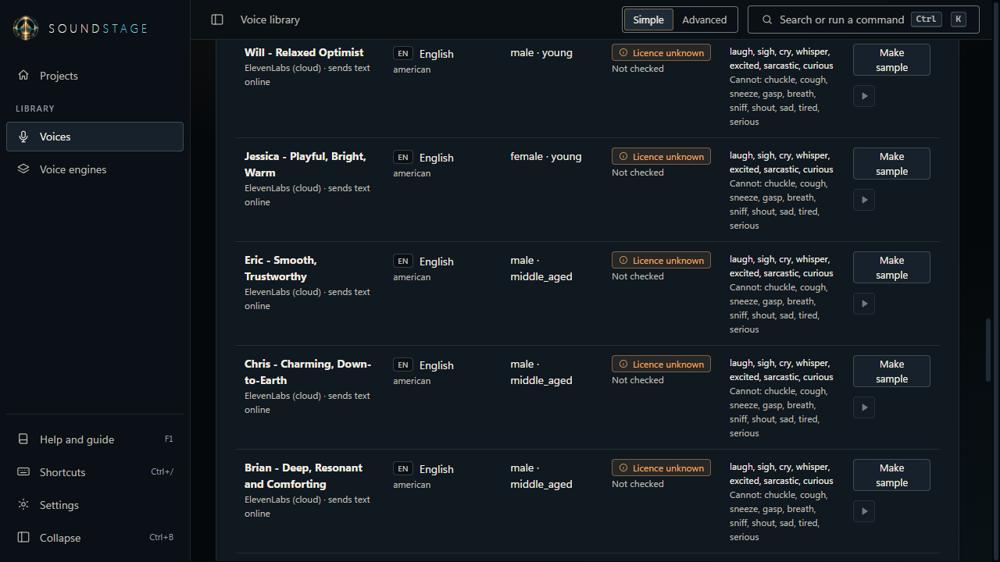
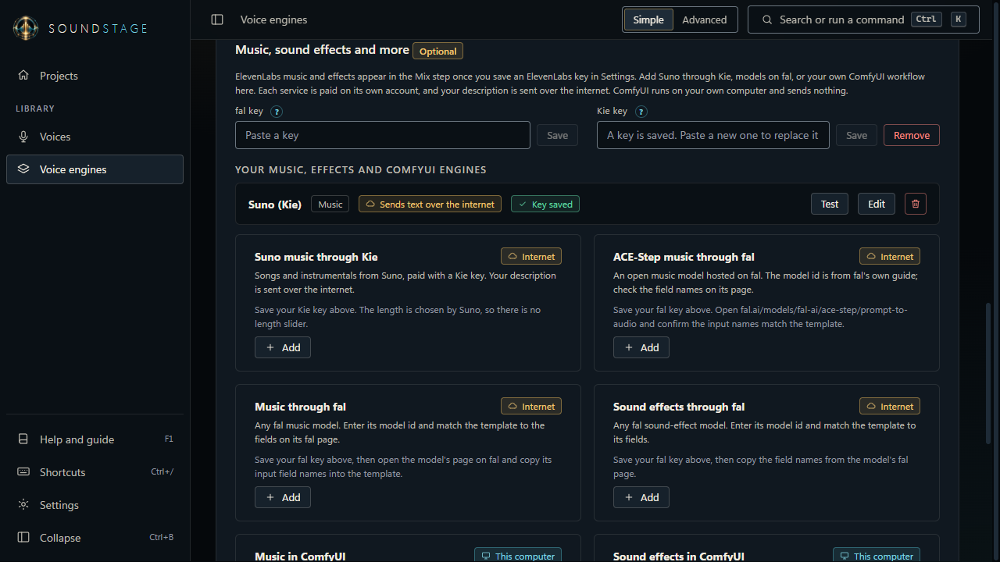
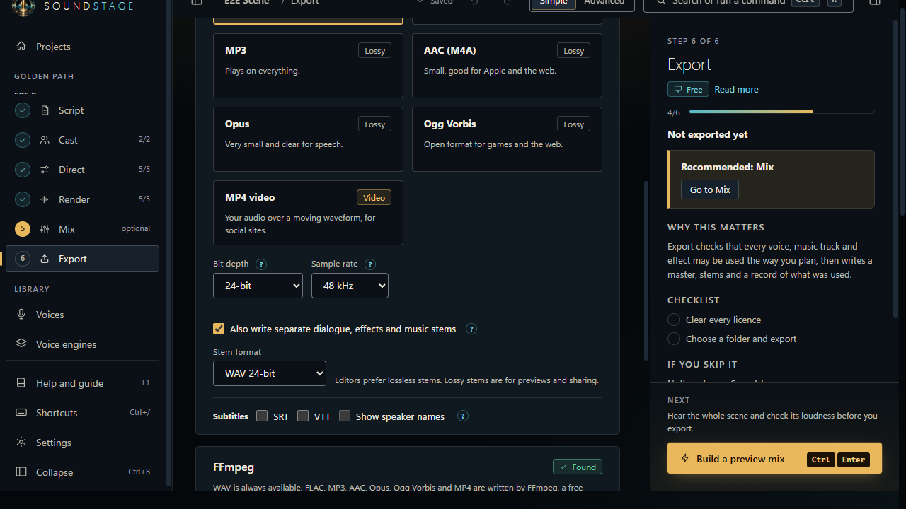

Soundstage
The whole sound side of your film: voices, music, effects and the final mix, with a guide beside you from the first line.
Get Soundstage for WindowsFree with the voices already on your computer. Online voices use your own accounts.

A path that guides you
Script, Cast, Direct, Render, Mix, Export. Always one clear next step, in plain language.
Local first
Windows voices, Piper and your own speech servers need no account and send nothing out.
Online when you want it
ElevenLabs, OpenRouter, Suno through Kie and fal models, each asking before it sends anything.
Music and effects
Describe a sound, or tap a few choices and let the prompt helper write it for you.
Rights you can trust
Every voice and generated sound is tracked. Commercial export is blocked until its licence is recorded.
Export anywhere
WAV, FLAC, MP3, AAC, Opus, MP4, stems and subtitles, with a manifest that labels AI audio.
A look around





Get it
Soundstage runs on Windows 10 and 11. Download link to be added at release.
Early builds are not yet code-signed, so Windows may show a SmartScreen warning.